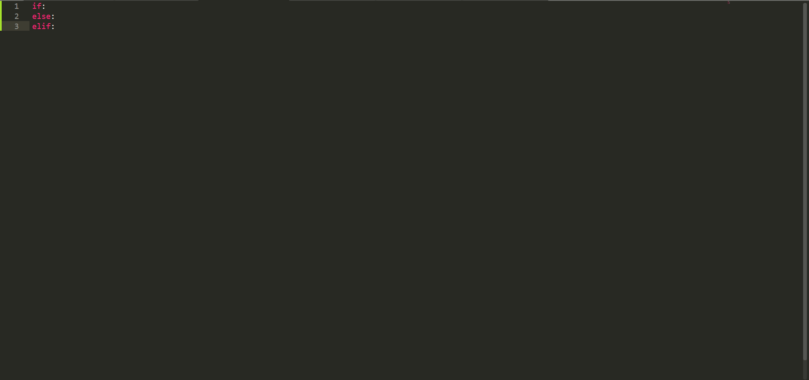
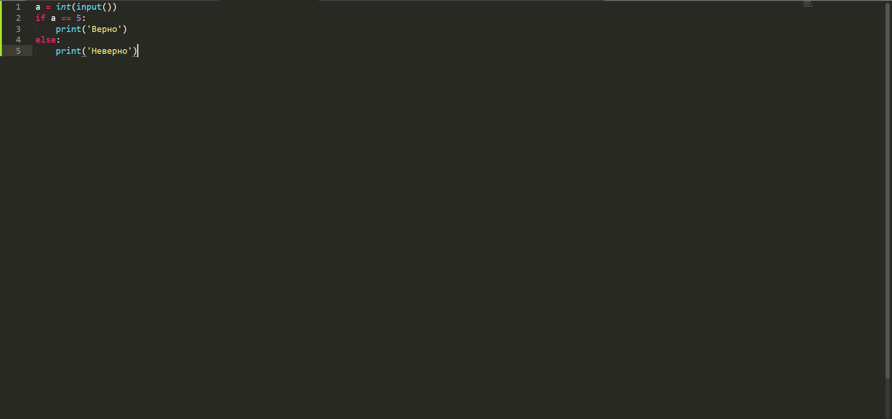

Сегодня мы поговорим об одной из самых важных тем в языке Python - об условных операторах. И под словом "условные" я подразумеваю то, что эти операторы задают условия при выполнении или не выполнении которых могут происходить разные действия. Начнём с простого - с оператора if. если вы хорошо знаете английский, то наверняка уже поняли что он делает. Оператор if задаёт условие, только привыполнении которого происходит действие. Тут вы спросите: что добавить для случая, если пользователь не выполнил действие? Тут в игру вступает оператор else, который выполняет какое-либо действие в случае, если пользователь невыполнил условие. После условных операторов ставится двоеточие. Также для добавочного действия существует оператор elif.
Итак, всех существующих условных операторов вы только что видели на фото. Теперь как всегда решим задачу, звучащую следующим образом: пользователь вводит число. Если число равно 5 то программа выводит на экран слово "Верно". Если же нет, то слово "Неверно". Те, кто изучал предыдущие темы наверняка быстро справятся с этой задачей. Решение вы видите снизу на фото.
Сегодня мы изучили работу условных операторов